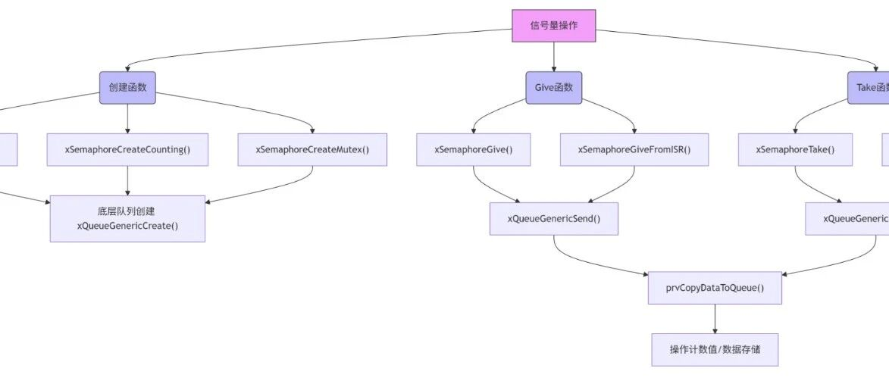

freertos之queue模块（下）
- 发送阻塞
当队列满时，发送任务可主动挂起 - 接收阻塞
当队列空时，接收任务可主动挂起 - 唤醒机制
当条件满足时自动唤醒等待任务
// 中断服务程序给出信号量void vISR_Handler() {BaseType_t xHigherPriorityTaskWoken = pdFALSE;xSemaphoreGiveFromISR(xBinarySem, &xHigherPriorityTaskWoken);portYIELD_FROM_ISR(xHigherPriorityTaskWoken);}// 任务等待信号量void vTask() {while(1) {if(xSemaphoreTake(xBinarySem, portMAX_DELAY) == pdTRUE) {// 处理中断事件}}}
// 本质上是长度>1、item size为0的队列QueueHandle_t xCountingSem = xQueueCreate(10, 0); // 最大计数10// 资源池管理void vResourceUser() {if(xSemaphoreTake(xCountingSem, pdMS_TO_TICKS(100))) {// 获取资源use_resource();// 释放资源xSemaphoreGive(xCountingSem);}}// 事件计数void vEventHandler() {for(int i=0; i<5; i++)xSemaphoreGive(xCountingSem); // 记录5次事件}
释放资源增加信号量，消耗资源减少信号量，信号量为0陷入阻塞。
3.互斥锁
// 特殊标记的二进制信号量QueueHandle_t xMutex = xQueueCreateMutex(queueQUEUE_IS_MUTEX);// 保护共享资源void vTaskA() {xSemaphoreTake(xMutex, portMAX_DELAY);// 访问临界区xSemaphoreGive(xMutex);}// 递归锁使用void vTaskB() {xSemaphoreTakeRecursive(xRecursiveMutex, portMAX_DELAY);// 调用可能再次取锁的函数vNestedFunction();xSemaphoreGiveRecursive(xRecursiveMutex);}void vNestedFunction() {xSemaphoreTakeRecursive(xRecursiveMutex, portMAX_DELAY);// 操作共享资源xSemaphoreGiveRecursive(xRecursiveMutex);}
互斥锁通过递归调用（允许同一个任务多次获取锁）保护临界区和有序安排临界区的使用。
1.动态创建信号量xQueueCreateCountingSemaphore（）QueueHandle_t xQueueCreateCountingSemaphore( const UBaseType_t uxMaxCount,const UBaseType_t uxInitialCount ){QueueHandle_t xHandle;configASSERT( uxMaxCount != 0 );configASSERT( uxInitialCount <= uxMaxCount );xHandle = xQueueGenericCreate( uxMaxCount, queueSEMAPHORE_QUEUE_ITEM_LENGTH, queueQUEUE_TYPE_COUNTING_SEMAPHORE );if( xHandle != NULL ){( ( Queue_t * ) xHandle )->uxMessagesWaiting = uxInitialCount;traceCREATE_COUNTING_SEMAPHORE();}else{traceCREATE_COUNTING_SEMAPHORE_FAILED();}return xHandle;}
信号量本质上也是一个通用数列，但是有一些专有函数，二进制/计数信号量共用一个信号量创建函数（区别在于uxMaxCount是不是1）。
这个函数的核心步骤是调用了一个创建通用队列的函数，只不过参数处理了一下。
xHandle = xQueueGenericCreate( uxMaxCount, queueSEMAPHORE_QUEUE_ITEM_LENGTH, queueQUEUE_TYPE_COUNTING_SEMAPHORE );uxMaxCount 作为队列长度（即信号量的最大计数值）。queueSEMAPHORE_QUEUE_ITEM_LENGTH = 0，因为信号量不存储实际数据。queueQUEUE_TYPE_COUNTING_SEMAPHORE 表示这是一个计数信号量。
除此之外，我们需要为它准备一个计数值（可用资源量）
( ( Queue_t * ) xHandle )->uxMessagesWaiting = uxInitialCount;调用 xQueueGive()会增加计数值（相当于give信号量）。调用 xQueueTake()会减少计数值（相当于take信号量）。
QueueHandle_t xQueueCreateCountingSemaphoreStatic( const UBaseType_t uxMaxCount,const UBaseType_t uxInitialCount,StaticQueue_t * pxStaticQueue ){QueueHandle_t xHandle;configASSERT( uxMaxCount != 0 );configASSERT( uxInitialCount <= uxMaxCount );xHandle = xQueueGenericCreateStatic( uxMaxCount, queueSEMAPHORE_QUEUE_ITEM_LENGTH, NULL, pxStaticQueue, queueQUEUE_TYPE_COUNTING_SEMAPHORE );if( xHandle != NULL ){( ( Queue_t * ) xHandle )->uxMessagesWaiting = uxInitialCount;traceCREATE_COUNTING_SEMAPHORE();}else{traceCREATE_COUNTING_SEMAPHORE_FAILED();}return xHandle;}
xQueueCreateCountingSemaphoreStatic用于静态创建计数信号量。需要用户预先分配 StaticQueue_t 结构体，不依赖动态内存。适用于无动态内存或高可靠性的嵌入式系统。其他操作（Give/Take）与动态版本完全相同。BaseType_t xQueueSemaphoreTake( QueueHandle_t xQueue,TickType_t xTicksToWait ){BaseType_t xEntryTimeSet = pdFALSE;TimeOut_t xTimeOut;Queue_t * const pxQueue = xQueue;BaseType_t xInheritanceOccurred = pdFALSE;/* Check the queue pointer is not NULL. */configASSERT( ( pxQueue ) );/* Check this really is a semaphore, in which case the item size will be* 0. */configASSERT( pxQueue->uxItemSize == 0 );/* Cannot block if the scheduler is suspended. */{configASSERT( !( ( xTaskGetSchedulerState() == taskSCHEDULER_SUSPENDED ) && ( xTicksToWait != 0 ) ) );}/*lint -save -e904 This function relaxes the coding standard somewhat to allow return* statements within the function itself. This is done in the interest* of execution time efficiency. */for( ; ; ){taskENTER_CRITICAL();{/* Semaphores are queues with an item size of 0, and where the* number of messages in the queue is the semaphore's count value. */const UBaseType_t uxSemaphoreCount = pxQueue->uxMessagesWaiting;/* Is there data in the queue now? To be running the calling task* must be the highest priority task wanting to access the queue. */if( uxSemaphoreCount > ( UBaseType_t ) 0 ){traceQUEUE_RECEIVE( pxQueue );/* Semaphores are queues with a data size of zero and where the* messages waiting is the semaphore's count. Reduce the count. */pxQueue->uxMessagesWaiting = uxSemaphoreCount - ( UBaseType_t ) 1;{if( pxQueue->uxQueueType == queueQUEUE_IS_MUTEX ){/* Record the information required to implement* priority inheritance should it become necessary. */pxQueue->u.xSemaphore.xMutexHolder = pvTaskIncrementMutexHeldCount();}else{mtCOVERAGE_TEST_MARKER();}}/* Check to see if other tasks are blocked waiting to give the* semaphore, and if so, unblock the highest priority such task. */if( listLIST_IS_EMPTY( &( pxQueue->xTasksWaitingToSend ) ) == pdFALSE ){if( xTaskRemoveFromEventList( &( pxQueue->xTasksWaitingToSend ) ) != pdFALSE ){queueYIELD_IF_USING_PREEMPTION();}else{mtCOVERAGE_TEST_MARKER();}}else{mtCOVERAGE_TEST_MARKER();}taskEXIT_CRITICAL();return pdPASS;}else{if( xTicksToWait == ( TickType_t ) 0 ){/* For inheritance to have occurred there must have been an* initial timeout, and an adjusted timeout cannot become 0, as* if it were 0 the function would have exited. */{configASSERT( xInheritanceOccurred == pdFALSE );}/* The semaphore count was 0 and no block time is specified* (or the block time has expired) so exit now. */taskEXIT_CRITICAL();traceQUEUE_RECEIVE_FAILED( pxQueue );return errQUEUE_EMPTY;}else if( xEntryTimeSet == pdFALSE ){/* The semaphore count was 0 and a block time was specified* so configure the timeout structure ready to block. */vTaskInternalSetTimeOutState( &xTimeOut );xEntryTimeSet = pdTRUE;}else{/* Entry time was already set. */mtCOVERAGE_TEST_MARKER();}}}taskEXIT_CRITICAL();/* Interrupts and other tasks can give to and take from the semaphore* now the critical section has been exited. */vTaskSuspendAll();prvLockQueue( pxQueue );/* Update the timeout state to see if it has expired yet. */if( xTaskCheckForTimeOut( &xTimeOut, &xTicksToWait ) == pdFALSE ){/* A block time is specified and not expired. If the semaphore* count is 0 then enter the Blocked state to wait for a semaphore to* become available. As semaphores are implemented with queues the* queue being empty is equivalent to the semaphore count being 0. */if( prvIsQueueEmpty( pxQueue ) != pdFALSE ){traceBLOCKING_ON_QUEUE_RECEIVE( pxQueue );{if( pxQueue->uxQueueType == queueQUEUE_IS_MUTEX ){taskENTER_CRITICAL();{xInheritanceOccurred = xTaskPriorityInherit( pxQueue->u.xSemaphore.xMutexHolder );}taskEXIT_CRITICAL();}else{mtCOVERAGE_TEST_MARKER();}}vTaskPlaceOnEventList( &( pxQueue->xTasksWaitingToReceive ), xTicksToWait );prvUnlockQueue( pxQueue );if( xTaskResumeAll() == pdFALSE ){portYIELD_WITHIN_API();}else{mtCOVERAGE_TEST_MARKER();}}else{/* There was no timeout and the semaphore count was not 0, so* attempt to take the semaphore again. */prvUnlockQueue( pxQueue );( void ) xTaskResumeAll();}}else{/* Timed out. */prvUnlockQueue( pxQueue );( void ) xTaskResumeAll();/* If the semaphore count is 0 exit now as the timeout has* expired. Otherwise return to attempt to take the semaphore that is* known to be available. As semaphores are implemented by queues the* queue being empty is equivalent to the semaphore count being 0. */if( prvIsQueueEmpty( pxQueue ) != pdFALSE ){{/* xInheritanceOccurred could only have be set if* pxQueue->uxQueueType == queueQUEUE_IS_MUTEX so no need to* test the mutex type again to check it is actually a mutex. */if( xInheritanceOccurred != pdFALSE ){taskENTER_CRITICAL();{UBaseType_t uxHighestWaitingPriority;/* This task blocking on the mutex caused another* task to inherit this task's priority. Now this task* has timed out the priority should be disinherited* again, but only as low as the next highest priority* task that is waiting for the same mutex. */uxHighestWaitingPriority = prvGetDisinheritPriorityAfterTimeout( pxQueue );vTaskPriorityDisinheritAfterTimeout( pxQueue->u.xSemaphore.xMutexHolder, uxHighestWaitingPriority );}taskEXIT_CRITICAL();}}traceQUEUE_RECEIVE_FAILED( pxQueue );return errQUEUE_EMPTY;}else{mtCOVERAGE_TEST_MARKER();}}} /*lint -restore */}
该函数用于获取信号量（Semaphore），可以是二进制信号量、计数信号量或互斥锁（Mutex）。如果信号量可用（计数值 > 0），则直接获取并返回成功。如果信号量不可用（计数值 = 0），则根据 xTicksToWait 决定是否阻塞等待。
uxMessagesWaiting--）。如果是互斥锁，则记录持有者。如果当前任务因获取互斥锁而阻塞，持有互斥锁的任务会临时提升优先级。// 如果是互斥锁，记录持有者（优先级继承）if (pxQueue->uxQueueType == queueQUEUE_IS_MUTEX) {pxQueue->u.xSemaphore.xMutexHolder = pvTaskIncrementMutexHeldCount();}
xTasksWaitingToReceive 列表。当其他任务调用 xQueueGive 时，会唤醒等待的任务。这个函数在上一篇文章中有所提及，但因为它较长，此次不再放在这。static BaseType_t prvCopyDataToQueue( Queue_t * const pxQueue,const void * pvItemToQueue,const BaseType_t xPosition ){BaseType_t xReturn = pdFALSE;UBaseType_t uxMessagesWaiting;/* This function is called from a critical section. */uxMessagesWaiting = pxQueue->uxMessagesWaiting;if( pxQueue->uxItemSize == ( UBaseType_t ) 0 ){{if( pxQueue->uxQueueType == queueQUEUE_IS_MUTEX ){/* The mutex is no longer being held. */xReturn = xTaskPriorityDisinherit( pxQueue->u.xSemaphore.xMutexHolder );pxQueue->u.xSemaphore.xMutexHolder = NULL;}else{mtCOVERAGE_TEST_MARKER();}}}else if( xPosition == queueSEND_TO_BACK ){( void ) memcpy( ( void * ) pxQueue->pcWriteTo, pvItemToQueue, ( size_t ) pxQueue->uxItemSize ); /*lint !e961 !e418 !e9087 MISRA exception as the casts are only redundant for some ports, plus previous logic ensures a null pointer can only be passed to memcpy() if the copy size is 0. Cast to void required by function signature and safe as no alignment requirement and copy length specified in bytes. */pxQueue->pcWriteTo += pxQueue->uxItemSize; /*lint !e9016 Pointer arithmetic on char types ok, especially in this use case where it is the clearest way of conveying intent. */if( pxQueue->pcWriteTo >= pxQueue->u.xQueue.pcTail ) /*lint !e946 MISRA exception justified as comparison of pointers is the cleanest solution. */{pxQueue->pcWriteTo = pxQueue->pcHead;}else{mtCOVERAGE_TEST_MARKER();}}else{( void ) memcpy( ( void * ) pxQueue->u.xQueue.pcReadFrom, pvItemToQueue, ( size_t ) pxQueue->uxItemSize ); /*lint !e961 !e9087 !e418 MISRA exception as the casts are only redundant for some ports. Cast to void required by function signature and safe as no alignment requirement and copy length specified in bytes. Assert checks null pointer only used when length is 0. */pxQueue->u.xQueue.pcReadFrom -= pxQueue->uxItemSize;if( pxQueue->u.xQueue.pcReadFrom < pxQueue->pcHead ) /*lint !e946 MISRA exception justified as comparison of pointers is the cleanest solution. */{pxQueue->u.xQueue.pcReadFrom = ( pxQueue->u.xQueue.pcTail - pxQueue->uxItemSize );}else{mtCOVERAGE_TEST_MARKER();}if( xPosition == queueOVERWRITE ){if( uxMessagesWaiting > ( UBaseType_t ) 0 ){/* An item is not being added but overwritten, so subtract* one from the recorded number of items in the queue so when* one is added again below the number of recorded items remains* correct. */--uxMessagesWaiting;}else{mtCOVERAGE_TEST_MARKER();}}else{mtCOVERAGE_TEST_MARKER();}}pxQueue->uxMessagesWaiting = uxMessagesWaiting + ( UBaseType_t ) 1;return xReturn;}
参数说明
pxQueue | Queue_t* | |
pvItemToQueue | const void* | NULL）。 |
xPosition | BaseType_t | - queueSEND_TO_BACK（队尾）- queueSEND_TO_FRONT（队头）- queueOVERWRITE（覆盖模式） |
（1）获取当前消息数量
uxMessagesWaiting = pxQueue->uxMessagesWaiting;读取队列的当前消息数量（信号量的计数值）。
(2) 处理信号量/互斥锁（uxItemSize = 0）
uxItemSize == (UBaseType_t))信号量/互斥锁的 uxItemSize = 0，不存储实际数据。
处理互斥锁（Mutex）
if(configUSE_MUTEXES == 1)uxQueueType == queueQUEUE_IS_MUTEX){xReturn = xTaskPriorityDisinherit(pxQueue->u.xSemaphore.xMutexHolder);u.xSemaphore.xMutexHolder =NULL;}endif
uxQueueType == queueQUEUE_IS_MUTEX），释放锁并处理 优先级继承：xReturn表示是否需要任务切换（如果优先级发生变化）。处理信号量（Semaphore）
else{mtCOVERAGE_TEST_MARKER();// 无实际操作，仅用于覆盖率测试}
信号量只需增加计数值（后续逻辑处理）。
(3) 处理普通队列（uxItemSize > 0）
数据写入队尾（queueSEND_TO_BACK）
else if(xPosition == queueSEND_TO_BACK){pcWriteTo, pvItemToQueue, pxQueue->uxItemSize);pcWriteTo += pxQueue->uxItemSize;pcWriteTo >= pxQueue->u.xQueue.pcTail){pcWriteTo = pxQueue->pcHead;// 循环队列处理}}
1.将数据复制到 pcWriteTo 指向的位置。
2.移动写指针 pcWriteTo。
数据写入队头（queueSEND_TO_FRONT）
else{u.xQueue.pcReadFrom, pvItemToQueue, pxQueue->uxItemSize);u.xQueue.pcReadFrom -= pxQueue->uxItemSize;u.xQueue.pcReadFrom < pxQueue->pcHead){u.xQueue.pcReadFrom = (pxQueue->u.xQueue.pcTail - pxQueue->uxItemSize);}}
将数据复制到 pcReadFrom指向的位置（队头）。移动读指针 pcReadFrom（反向移动）。如果越界，重置到队列尾部。
(4) 更新消息数量
pxQueue->uxMessagesWaiting = uxMessagesWaiting +1;uxMessagesWaiting。
QueueHandle_t xQueueCreateMutex( const uint8_t ucQueueType ){QueueHandle_t xNewQueue;const UBaseType_t uxMutexLength = ( UBaseType_t ) 1, uxMutexSize = ( UBaseType_t ) 0;xNewQueue = xQueueGenericCreate( uxMutexLength, uxMutexSize, ucQueueType );prvInitialiseMutex( ( Queue_t * ) xNewQueue );return xNewQueue;}
这个函数的核心逻辑非常简单，先调用 xQueueGenericCreate 创建一个队列（长度为1，大小为0，实际用作互斥锁），再调用 prvInitialiseMutex 初始化互斥锁的特殊属性。
所以，创建互斥锁的重点在于它的初始化函数。
2.prvInitialiseMutex（）互斥锁初始化
static void prvInitialiseMutex( Queue_t * pxNewQueue ){if( pxNewQueue != NULL ){/* The queue create function will set all the queue structure members* correctly for a generic queue, but this function is creating a* mutex. Overwrite those members that need to be set differently -* in particular the information required for priority inheritance. */pxNewQueue->u.xSemaphore.xMutexHolder = NULL;pxNewQueue->uxQueueType = queueQUEUE_IS_MUTEX;/* In case this is a recursive mutex. */pxNewQueue->u.xSemaphore.uxRecursiveCallCount = 0;traceCREATE_MUTEX( pxNewQueue );/* Start with the semaphore in the expected state. */( void ) xQueueGenericSend( pxNewQueue, NULL, ( TickType_t ) 0U, queueSEND_TO_BACK );}else{traceCREATE_MUTEX_FAILED();}}
这个函数在检查指针有效后，会进行如下的四步重要步骤：
pxNewQueue->u.xSemaphore.xMutexHolder = NULL;pxNewQueue->uxQueueType = queueQUEUE_IS_MUTEX;/* In case this is a recursive mutex. */pxNewQueue->u.xSemaphore.uxRecursiveCallCount = 0;/* Start with the semaphore in the expected state. */( void ) xQueueGenericSend( pxNewQueue, NULL, ( TickType_t ) 0U, queueSEND_TO_BACK );
(1)设置互斥锁持有者为NULL，表示目前没有任务持有锁。
（2）标记队列类型为互斥锁，将uxQueueType设置为互斥锁类型，便于其他函数按照互斥标注处理。FreeRTOS 中队列、信号量、互斥锁共用同一数据结构（Queue_t），通过 uxQueueType 区分行为：
queueQUEUE_IS_MUTEX：互斥锁（支持优先级继承）。queueQUEUE_IS_COUNTING_SEMAPHORE：计数信号量。 （3）初始化递归计数器u.xSemaphore.uxRecursiveCallCount为0，用于支持递归互斥锁。递归的意思是如果同一任务多次调用 xSemaphoreTakeRecursive，每次获取锁时计数器 +1，释放时 -1，只有计数器归零时才会真正释放锁。
（4）发送解锁信号，通过xQueueGenericSend发送一条空消息表示互斥锁可用（队列不为空）
TaskHandle_t xQueueGetMutexHolder( QueueHandle_t xSemaphore ){TaskHandle_t pxReturn;Queue_t * const pxSemaphore = ( Queue_t * ) xSemaphore;/* This function is called by xSemaphoreGetMutexHolder(), and should not* be called directly. Note: This is a good way of determining if the* calling task is the mutex holder, but not a good way of determining the* identity of the mutex holder, as the holder may change between the* following critical section exiting and the function returning. */taskENTER_CRITICAL();{if( pxSemaphore->uxQueueType == queueQUEUE_IS_MUTEX ){pxReturn = pxSemaphore->u.xSemaphore.xMutexHolder;}else{pxReturn = NULL;}}taskEXIT_CRITICAL();return pxReturn;}
这个函数是 FreeRTOS 内部用于获取当前持有互斥锁（Mutex）的任务句柄的核心函数，通常由 xSemaphoreGetMutexHolder() 调用。它的主要功能是安全地读取互斥锁的持有者信息，并处理竞态条件。（需要临界区保护）。
if (pxSemaphore->uxQueueType == queueQUEUE_IS_MUTEX) {pxReturn = pxSemaphore->u.xSemaphore.xMutexHolder;} else {pxReturn = NULL;}
核心逻辑：
检查 uxQueueType字段（队列类型），确认传入的句柄确实是互斥锁，而非普通队列或信号量。如果是互斥锁，返回当前持有者 xMutexHolder；否则返回NULL。
这个函数还有一个中断调用版本，可以从中断中瞬间作用。因为这个函数不是修改性的而是访问性的，所以不需要关中断。
4.xQueueGiveMutexRecursive（）释放互斥锁
BaseType_t xQueueGiveMutexRecursive( QueueHandle_t xMutex ){BaseType_t xReturn;Queue_t * const pxMutex = ( Queue_t * ) xMutex;configASSERT( pxMutex );/* If this is the task that holds the mutex then xMutexHolder will not* change outside of this task. If this task does not hold the mutex then* pxMutexHolder can never coincidentally equal the tasks handle, and as* this is the only condition we are interested in it does not matter if* pxMutexHolder is accessed simultaneously by another task. Therefore no* mutual exclusion is required to test the pxMutexHolder variable. */if( pxMutex->u.xSemaphore.xMutexHolder == xTaskGetCurrentTaskHandle() ){traceGIVE_MUTEX_RECURSIVE( pxMutex );/* uxRecursiveCallCount cannot be zero if xMutexHolder is equal to* the task handle, therefore no underflow check is required. Also,* uxRecursiveCallCount is only modified by the mutex holder, and as* there can only be one, no mutual exclusion is required to modify the* uxRecursiveCallCount member. */( pxMutex->u.xSemaphore.uxRecursiveCallCount )--;/* Has the recursive call count unwound to 0? */if( pxMutex->u.xSemaphore.uxRecursiveCallCount == ( UBaseType_t ) 0 ){/* Return the mutex. This will automatically unblock any other* task that might be waiting to access the mutex. */( void ) xQueueGenericSend( pxMutex, NULL, queueMUTEX_GIVE_BLOCK_TIME, queueSEND_TO_BACK );}else{mtCOVERAGE_TEST_MARKER();}xReturn = pdPASS;}else{/* The mutex cannot be given because the calling task is not the* holder. */xReturn = pdFAIL;traceGIVE_MUTEX_RECURSIVE_FAILED( pxMutex );}return xReturn;}
这个函数是 FreeRTOS 中用于递归释放互斥锁（Recursive Mutex）的核心函数，主要功能是：检查当前任务是否持有锁（否则返回失败）；减少递归计数（uxRecursiveCallCount）；当计数器归零时真正释放锁（允许其他任务获取）。
这个函数会先检查当前任务是不是持有者，如果当前任务是持有者，则 xMutexHolder 不会被其他任务修改（因为只有持有者能释放锁）。而如果当前任务不是持有者，即使其他任务并发修改 xMutexHolder，也不会误判（因为只关心是否匹配当前任务）。
如果可以释放，则减少递归计数器
u.xSemaphore.uxRecursiveCallCount)--;无需保护：只有持有者能修改此字段，不存在竞态条件
检查计数器的值是否归零
if (pxMutex->u.xSemaphore.uxRecursiveCallCount == 0)如果计数器归零，表示所有递归获取的锁已释放，需真正释放锁。调用 xQueueGenericSend 发送一个“可用”信号。
(void)xQueueGenericSend(pxMutex, NULL, queueMUTEX_GIVE_BLOCK_TIME, queueSEND_TO_BACK);5.互斥锁获取xQueueTakeMutexRecursive（）
BaseType_t xQueueTakeMutexRecursive( QueueHandle_t xMutex,TickType_t xTicksToWait ){BaseType_t xReturn;Queue_t * const pxMutex = ( Queue_t * ) xMutex;configASSERT( pxMutex );/* Comments regarding mutual exclusion as per those within* xQueueGiveMutexRecursive(). */traceTAKE_MUTEX_RECURSIVE( pxMutex );if( pxMutex->u.xSemaphore.xMutexHolder == xTaskGetCurrentTaskHandle() ){( pxMutex->u.xSemaphore.uxRecursiveCallCount )++;xReturn = pdPASS;}else{xReturn = xQueueSemaphoreTake( pxMutex, xTicksToWait );/* pdPASS will only be returned if the mutex was successfully* obtained. The calling task may have entered the Blocked state* before reaching here. */if( xReturn != pdFAIL ){( pxMutex->u.xSemaphore.uxRecursiveCallCount )++;}else{traceTAKE_MUTEX_RECURSIVE_FAILED( pxMutex );}}return xReturn;}
这个函数是 FreeRTOS 中用于递归获取互斥锁（Recursive Mutex）的核心函数，主要功能是：检查当前任务是否已持有锁（如果是，仅增加递归计数器）；如果未持有锁，则尝试获取锁（可能阻塞等待）；支持嵌套获取锁（同一任务可多次获取同一把锁）
这个函数会检查当前任务是否持有锁（和上一个函数一样）。如果当前任务已是锁的持有者，只需增加递归计数器 uxRecursiveCallCount。（无需阻塞或临界区保护，因为只有持有者能修改此字段。）
若当前任务未持有锁，则会尝试调用 xQueueSemaphoreTake获取锁：
else {xReturn = xQueueSemaphoreTake(pxMutex, xTicksToWait); // 阻塞获取锁if (xReturn != pdFAIL) {(pxMutex->u.xSemaphore.uxRecursiveCallCount)++; // 获取成功后计数器+1} else {traceTAKE_MUTEX_RECURSIVE_FAILED(pxMutex); // 记录获取失败（调试用）}}
调用 xQueueSemaphoreTake尝试获取锁：如果锁可用：立即返回 pdPASS。如果锁被其他任务持有：根据 xTicksToWait决定阻塞或超时返回。获取成功后： 设置持有者为当前任务（在 xQueueSemaphoreTake中完成）。递归计数器初始化为 1（因为这是第一次获取）。 获取失败时： 返回 pdFAIL（例如超时或句柄无效）。可选记录调试信息（ traceTAKE_MUTEX_RECURSIVE_FAILED）。
总的来说，互斥锁的核心作用有以下三点：
- 保护共享资源
确保同一时间只有一个任务能访问临界区（如全局变量、硬件外设）。 - 防止优先级反转
通过优先级继承机制临时提升持有锁的低优先级任务的优先级。 - 支持递归锁定
允许同一任务多次获取同一把锁（需配对释放）。
互斥锁不需要临界区保护，因为它记录持有者并且只能由持有者调用。递归使用互斥锁时释放次数需要与获取次数相同才能彻底释放，不然可能形成死锁。我用一张图来概括互斥锁的工作机制：

四、全文总结
FreeRTOS中的队列不仅是任务间通信（IPC）的基础设施，还通过阻塞/唤醒机制和空/满状态管理，衍生出以下同步与资源管理功能：
- 信号量：
- 二进制信号量
长度为1、项大小为0的队列，模拟布尔标志（0/1），用于事件通知。 - 计数信号量
长度>1、项大小为0的队列，表示资源可用数量（如缓冲区池）。 - 互斥锁：
特殊标记的二进制信号量，支持优先级继承和递归锁定，保护共享资源。
| 特性 | 队列（Queue） | 信号量（Semaphore） | 互斥锁（Mutex） |
|---|---|---|---|
| 数据存储 | |||
| 阻塞机制 | |||
| 持有者概念 | |||
| 优先级继承 | |||
| 递归锁定 | |||
| 典型用途 |